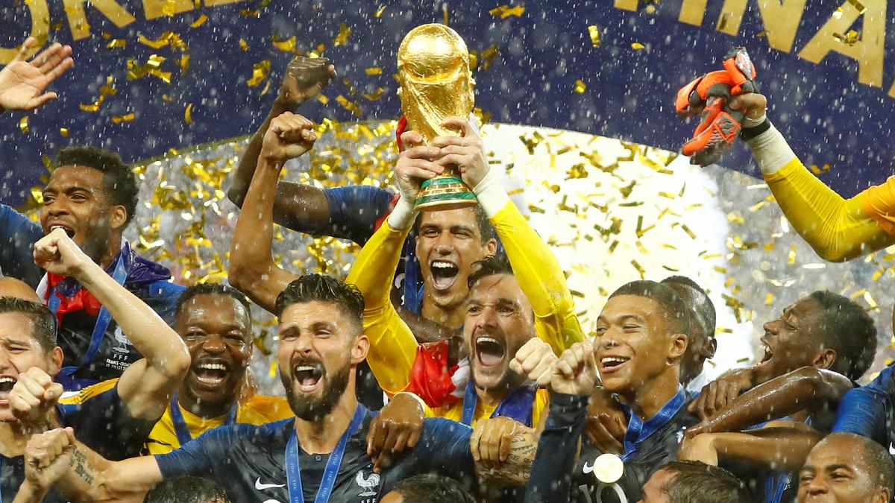
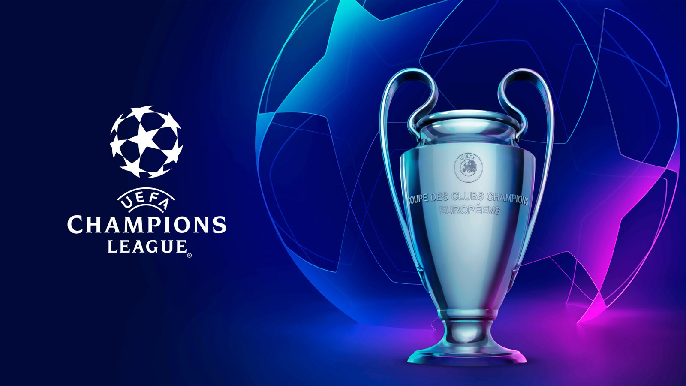

Balázs weboldala
Labdarúgás
Története
A labda rúgásával kapcsolatos játékokat a történelem során számos országban játszották. A FIFA szerint „nagyon kezdetleges volt a játéknak az a szakasza, amit Kínában gyakoroltak az i. e. 2. és az i. e. 3. évezredben (a játék neve cuju volt)
A modern szabályok alapjait a 19. század közepén akkor fektették le, amikor különválasztották a rögbit és a futballt.
A labdajátékok számos variációját játszották a középkori Európában, melynek különböző területein a szabályok nagymértékben eltérőek voltak. 1400 körül Firenzében a calció labdajátékot játszották előírt szabályok mellett, rögzített méretű játéktéren.
Világbajnokság
Az első világbajnokságot 1930-ban rendezték Uruguayban, melynek döntőjét Uruguay és Argentína (4–2) játszotta. Sok ország – Európából a nagy távolság és a jelentős költségek miatt csak négy csapat képviselte a labdarúgást – nem vett részt a tornán, így a legtöbb résztvevő az amerikai földrészről érkezett.
1934-től az európai csapatok is érdeklődni kezdtek a rendezvény iránt, ezért a tornát követően a verseny egyre jobban kiteljesedve a világ legnagyobb labdarúgó eseményévé vált.
Ettől kezdve egyéb bajnokságok is kialakultak – az Európa-bajnokság, a Dél-amerikai Copa América, az óceániai OFC-nemzetek kupája, az Ázsia-kupa, az afrikai nemzetek kupája és az Észak-amerikai CONCACAF-aranykupa, melyek mind a kontinensük legfőbb labdarúgó rendezvénye.
A brazil csapat – amely „Seleção”-ként is ismert – rendelkezik a legtöbb világbajnoki címmel, öt alkalommal volt győztes.
Alapszabályok
A pálya vázlata
A játékot 2×45 percig játsszák, ezeket nevezik félidőknek. A nem játékkal töltött időt (például sérülés, csere) a bírók a félidők végén hosszabbítás formájában beszámítják.
A játék célja a gól, vagyis a labdának az ellenfél kapujába való juttatása. A gól akkor szabályos, ha a labda teljes terjedelmével átjutott a gólvonalon.
Az a csapat nyeri a mérkőzést, aki a játékidő alatt több gólt ér el. Ha a két csapat góljainak száma megegyezik akkor a meccs döntetlen.
Mindkét csapatban 11 játékos van egy időben a pályán (amennyiben nincs kiállítás), de lehetőség van a cserére.
Hivatalos mérkőzéseken hármat lehet cserélni, barátságos meccseken a két csapat a játékvezetővel egyetértésben megegyezhet a cserelehetőségek számában. Az a játékos, akit edzője lecserélt, már nem térhet vissza a pályára az adott meccsen (kivétel az edzőmérkőzés).
A cserének ott kell elhagynia a pályát ami hozzá a legközelebb van.
Labdarúgás szépségei:
Világbajnokság:

Bajnokok ligája:

Márk
Olivér
Andris